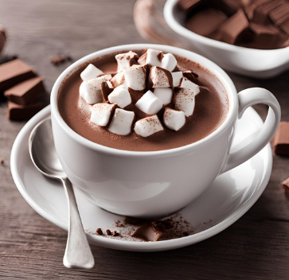
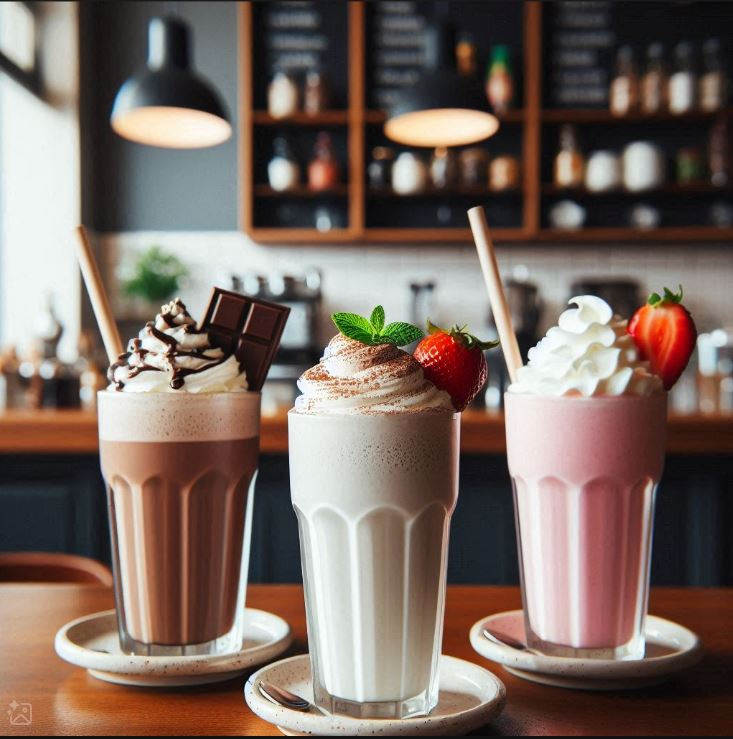
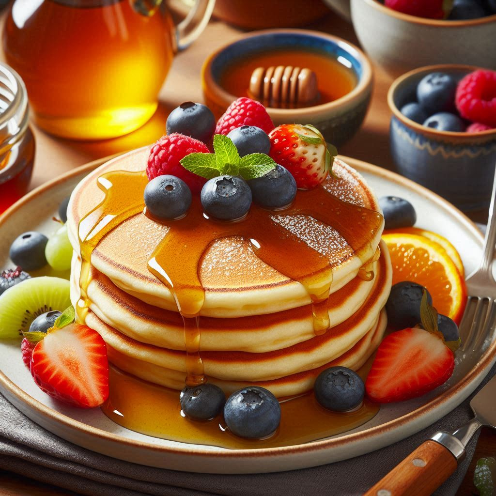
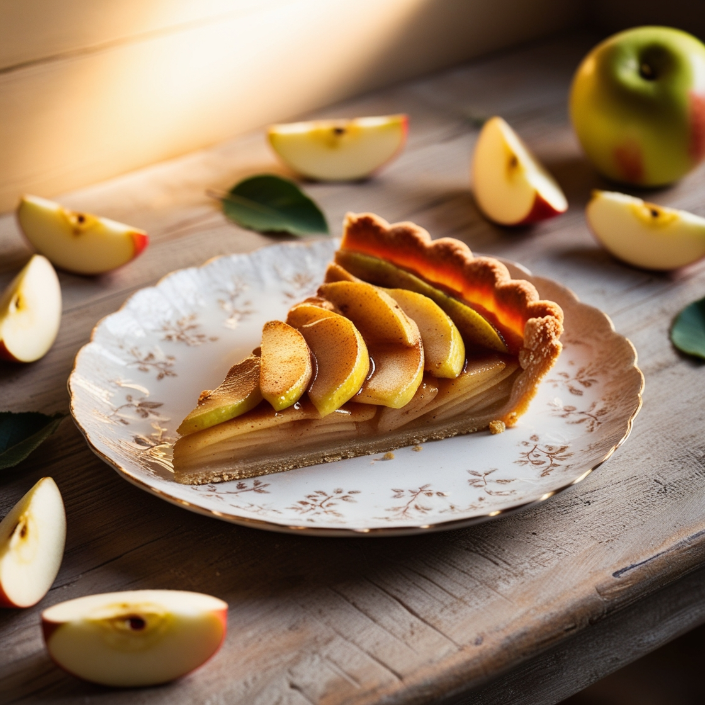
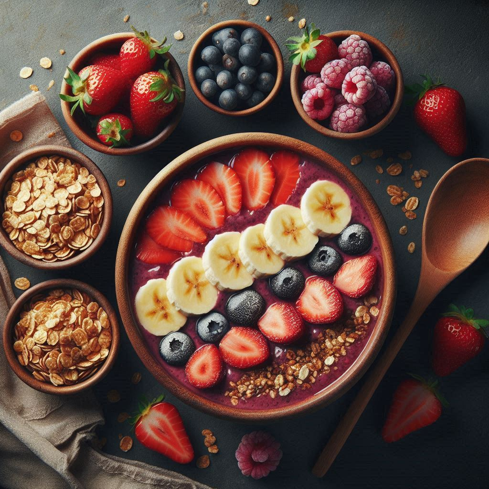
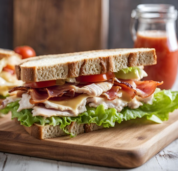

Bebidas
- Café Expresso - R$ 3,50
- Cappucino - R$ 5,50
- Chocolate Quente - R$ 7,00
- Milkshake - R$ 11,00
- Suco de Laranja Natural - R$ 8,00
Um clássico atemporal, o nosso café expresso é preparado com grãos selecionados, moídos na hora para garantir frescor e intensidade. Com sua crema densa e aromática, cada gole revela notas ricas e complexas, equilibrando doçura e leve amargor. Ideal para começar o dia ou desfrutar em uma pausa, nosso expresso é a essência do café em sua forma mais pura. Sirva-se e deixe-se envolver pela sua paixão.
Um verdadeiro abraço em forma de bebida, nosso cappuccino combina a intensidade do café expresso com a suavidade do leite vaporizado. Polvilhado com canela ou chocolate, é a escolha perfeita para aquecer o coração e animar o dia.
Delicie-se com nosso chocolate quente, preparado com chocolate belga de alta qualidade e leite cremoso com pedaços deliciosos de marshmallow por cima, criando uma bebida irresistível. Servido fumegante, é a companhia ideal para momentos de aconchego, perfeito para aquecer a alma e criar memórias.
Delicie-se com nosso irresistível milkshake! Experimente o refrescante milkshake de morango, feito com morangos frescos e cremosos, misturados a sorvete de baunilha e leite, criando uma explosão de sabor. Para os amantes do chocolate, o milkshake de chocolate é uma indulgência rica, feito com sorvete de chocolate e calda, finalizado com chantilly. E não podemos esquecer do clássico milkshake de baunilha, preparado com sorvete artesanal e leite, suave e aveludado, decorado com chantilly e uma cereja no topo. Escolha seu favorito e mergulhe nessa experiência deliciosa!
Refrescante e revitalizante, nosso suco de laranja é feito com laranjas frescas e suculentas, espremidas na hora para garantir o máximo de sabor e vitamina C. Naturalmente doce e vibrante, é a escolha ideal para quem busca uma bebida leve e cheia de energia para o dia!
Comidas
- Croissant - R$ 8,00
- Panquecas - R$ 10,00
- Torta de Maçã - R$ 14,00
- Açaí - R$ 12,00
- Sanduiche - R$ 10,00
Desfrute do nosso croissant, leve e amanteigado, com uma crocância irresistível por fora e uma maciez única por dentro. Perfeito para acompanhar seu café ou como um lanche a qualquer hora do dia.
Nossas panquecas fofinhas são servidas quentinhas, cobertas com maple syrup e acompanhadas de deliciosas frutas de qualidade. Uma opção deliciosa e reconfortante para começar bem o dia ou adoçar a tarde.
A clássica torta de maçã é uma verdadeira obra-prima: massa dourada e crocante, recheio de maçãs caramelizadas com um toque de canela. Servida quentinha, é o final perfeito para qualquer refeição.
Nossa tigela de açaí é preparada com açaí orgânico e fresco, misturado com frutas suculentas e granola crocante. Você pode personalizar sua tigela com até quatro toppings deliciosos. Escolha entre nossas opções de frutas frescas, como morango, blueberry e banana, ou adicione um toque crocante com granola. Além disso, oferecemos nozes e sementes para uma dose extra de nutrientes. Monte sua tigela do jeito que mais gosta e desfrute dessa refrescante experiência!
Desfrute do nosso delicioso sanduíche, montado com alface crocante, tomates frescos, bacon crocante, presunto e queijo. Servido em um pão integral, esse sanduíche é leve e nutritivo, perfeito para quem busca uma refeição saudável e saborosa. Uma opção deliciosa para qualquer hora do dia!